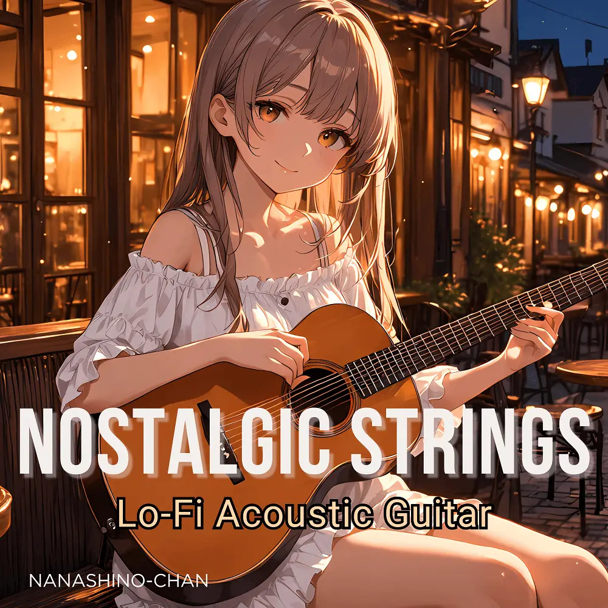

Lo-Fi · Acoustic · Instrumental
Nostalgic Strings: Lo-Fi Acoustic Guitar
Nanashino-chan
Explore Nostalgic Strings: Lo-Fi Acoustic Guitar by Nanashino-chan: 29 instrumental tracks spanning Lo-Fi / Acoustic / Instrumental. Start with Vinyl Memories / Soft Echoes, preview the collection and find your favorites on streaming services.
2025-04-02 · Released · 29 tracks · Instrumental
Preview the album
The jacket stays here until you choose a track. Playback uses YouTube.
YOUTUBE PREVIEW
Choose a track to listen
The jacket stays here until you choose a track. Playback uses YouTube.
If playback is unavailable, open the album or track on the streaming service.
Find this album on streaming services
Links marked “search” open search results. Select the album or track on the service.
Track list 29
- 01Vinyl Memories
- 02Soft Echoes
- 03Whispering Strings
- 04Quiet Reflection
- 05Fading Sunlight
- 06Nostalgic Breeze
- 07Gentle Path
- 08Worn Pages
- 09Distant Dreams
- 10Golden Horizon
- 11Serene Shores
- 12Evening Glow
- 13Velvet Nights
- 14Old Photographs
- 15Wandering Thoughts
- 16Whisper of Time
- 17Peaceful Rest
- 18Silent Woods
- 19Familiar Tune
- 20Echoes of Yesterday
- 21Timeless Strums
- 22Gentle Melancholy
- 23Autumn Breeze
- 24Rustling Leaves
- 25Remnants of the Past
- 26Quiet Reflections
- 27Endless Time
- 28Lasting Chords
- 29Final Reverie
Find a sound for your next post
Copy “Nanashino-chan + track title” and paste it into your social app’s music search. Availability depends on your region and account. Copying the name does not grant usage rights.